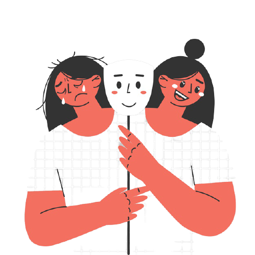

Clinical depression
A mental health disorder characterised by persistently depressed mood or loss of interest in activities, causing significant impairment in daily life.
Anxiety Disorder
A mental health disorder characterised by feelings of worry, anxiety or fear that are strong enough to interfere with one's daily activities.
Bipolar Disorder
A disorder associated with episodes of mood swings ranging from depressive lows to manic highs.
Dementia
A group of thinking and social symptoms that interferes with daily functioning.
Schizophrenia
A disorder that affects a person's ability to think, feel and behave clearly.
Post-traumatic stress disorder (PTSD)
A disorder characterised by failure to recover after experiencing or witnessing a terrifying event.